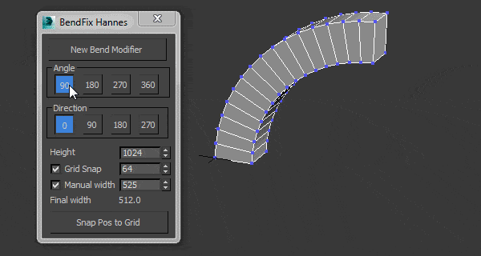
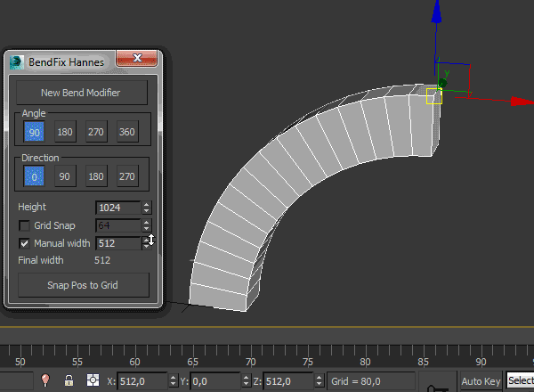
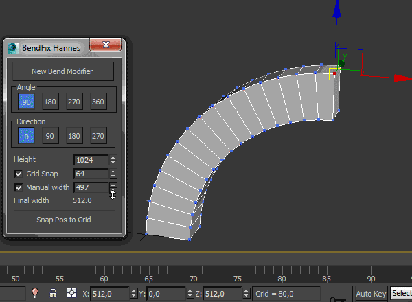
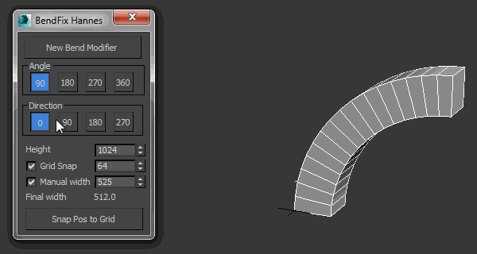

Advanced Bend Modifier
A maxscript that gives the user more control over the bend modifier.
The width after applying the bend modifier is not predictable, so when assets need to snap on a grid this is a hassle.
This script lets the user input a width and adjusts the bendmodifier to get the correct result.
features:
– uses smart snap to snap to a custom grid
– easily choose angle and direction
– apply new bend modifier with correct offset
– auto update current bendmodifier with selected settings
– realtime update of all settings!
– support for all 4 directions and 4 angles (90 180 270 360)
– choose your final width
– modify multiple selections at same time
– snap position to grid
   